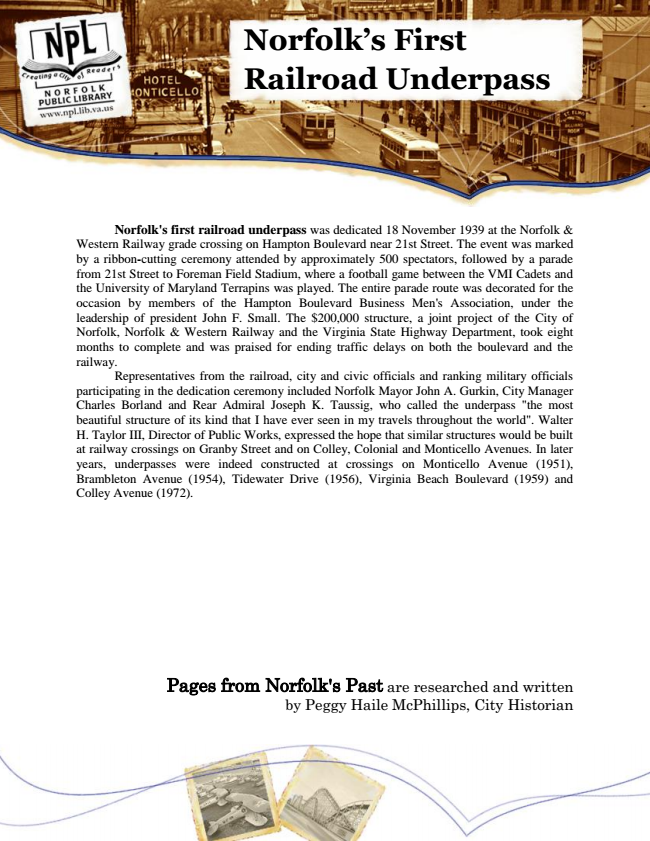

Norfolk’s First Railroad Underpass
Norfolk's first railroad underpass was dedicated 18 November 1939 at the Norfolk & Western Railway grade crossing on Hampton Boulevard near 21st Street. The event was marked by a ribbon-cutting ceremony attended by approximately 500 spectators, followed by a parade from 21st Street to Foreman Field Stadium, where a football game between the VMI Cadets and the University of Maryland Terrapins was played. The entire parade route was decorated for the occasion by members of the Hampton Boulevard Business Men's Association, under the leadership of president John F. Small. The $200,000 structure, a joint project of the City of Norfolk, Norfolk & Western Railway and the Virginia State Highway Department, took eight months to complete and was praised for ending traffic delays on both the boulevard and the railway.
Representatives from the railroad, city and civic officials and ranking military officials participating in the dedication ceremony included Norfolk Mayor John A. Gurkin, City Manager Charles Borland and Rear Admiral Joseph K. Taussig, who called the underpass "the most beautiful structure of its kind that I have ever seen in my travels throughout the world". Walter H. Taylor III, Director of Public Works, expressed the hope that similar structures would be built at railway crossings on Granby Street and on Colley, Colonial and Monticello Avenues. In later years, underpasses were indeed constructed at crossings on Monticello Avenue (1951), Brambleton Avenue (1954), Tidewater Drive (1956), Virginia Beach Boulevard (1959) and Colley Avenue (1972).
Pages from Norfolk's Past are researched and written by Peggy Haile McPhillips, City Historian